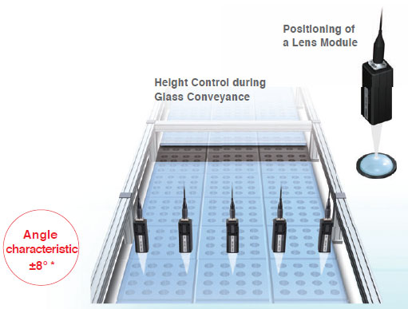

The 24 × 24-mm Sensor Head fits easily into essentially any machine.
Building Automation
Industrial Automation
Power Automation & Safety


Bangladesh Distributor
ZW Series
Confocal Fiber Displacement Sensor

Ultra-compact and Ultra-lightweight. Stable Measurements for Any Material. Robust Sensor Head Structure.
about this Product Family
Related Contents
- Displacement / Measurement Sensors
- Features
- Lineup
- Specifications
- Dimensions
- Catalog
last update: May 08, 2015
Ultra-compact and Ultra-lightweight
Utilize Narrow Spaces in Machines
*In-house comparisons.
Mounting area Reduced to 1/7*
*In-house comparison.
With traditional triangulation, it was necessary to use either diffuse reflection or regular reflection depending on the material. However, the confocal principle used for the ZW Series eliminates the need to change the Sensor installation even if the material changes.
Height Control of a Dispenser Nozzle
Installation in Tight Spaces
Space restrictions, heat generation, and mutual interference often prevent side-by-side installation of many traditional triangulation sensors. The compact, non-heat generating ZW-series Sensor Head eliminates these problem. Furthermore, the right-angle type Sensor Head can be installed in a limited space over workpieces without a turning mirror.
The traditional sensors generally measure the thickness of a workpiece by calculating the difference between the heights of the stage and the top surface of the workpiece. The ZW-series Sensor Head can be installed in the small space under the stage to directly measure the height from the top and bottom surfaces of the workpiece, which enables more accurate thickness inspection.
Thickness Inspection of Small Electronic Parts
Stable Measurements for Any Material with Superior Angle Characteristic
Stable Measurements from the Same Mounting Position Even for Different Materials
There is no need to change or tune the Sensor for each material. Even if the material changes, you can continue to achieve stable measurements with the same Sensor from the same mounting position.
Linearity for Various Materials
Stable Measurements across Boundaries between Materials
(All measurement graphs represent typical examples.)
Superior Angle Characteristic
When measuring an object that has a mirror-like surface with traditional triangulation, performance is greatly reduced depending on the angle of the Sensor.
When many Sensors are used for height control during glass conveyance, the angles of the Sensors must be adjusted with high precision during setup. The confocal Sensor ZW series enables high-resolution measurements without strict angle adjustment. This results in reduction of cost and space for the adjusting jig and time for adjustment.

Robust Sensor Head Structure
No Noise (Reduced Work for EMC Countermeasures)
Not Affected by Noise
To ensure high-resolution measurements with normal sensors, countermeasures must be implemented to protect the sensor from the electromagnetic noise that is emitted by any nearby devices.The ZW-series Sensor Heads, however, contain no electronic parts to enable stable measurements even near power sections. Also, the Fiber Cable that connects the Sensor Head to the Controller can be placed near power lines and other cables that emit noise without affecting operation.
No Noise Emission
No electronic parts are used in the ZW-series Sensor Heads or Fiber Cables, so they give off no electromagnetic noise. You can therefore use them reliably together with other devices.
No Heat Generation (Reduced Work in Thermal Design)
In high-resolution machine control, the heat generated by a sensor head can adversely affect nearby equipment and cause the error to increase. The ZW-series Sensor Heads, however, generate no heat and therefore do not affect nearby equipment. You can also install many Sensor Heads side by side and still be sure of reliable operation.
No Electronic Parts (Reduced Maintenance Costs)
Displacement sensors are often installed in moving applications and other installations that are subject to vibration. It is important that they can withstand this type of requirement. The ZW series Sensor Heads are designed for this type of environment, they have no electronic parts or PCB's that a standard triangulation sensor contains. The reduction of parts to lenses and fiber cables reduces the maintenance requirements, and the LED light source also eliminates the standard safety measures required for lasers.
EtherCAT Machine Control Network
The EtherCAT high-speed open network was optimized for machine control. The ZW-series Sensors are the first OMRON Displacement Sensors that with EtherCAT to provide a highly efficient design for high-precision machine control applications that use measurement results to control machine operation.
Combining Height Information and Position Coordinates
EtherCAT can be used to connect to servo drives or encoder input slaves to quickly get the position coordinates and ZW displacement. The height information and XY position coordinates can be easily linked so that the machine control applications can increase processing precision in respect to the height and the inspection applications benefit from maintenance, such as helping to isolate errors or perform trend analysis.
last update: May 08, 2015